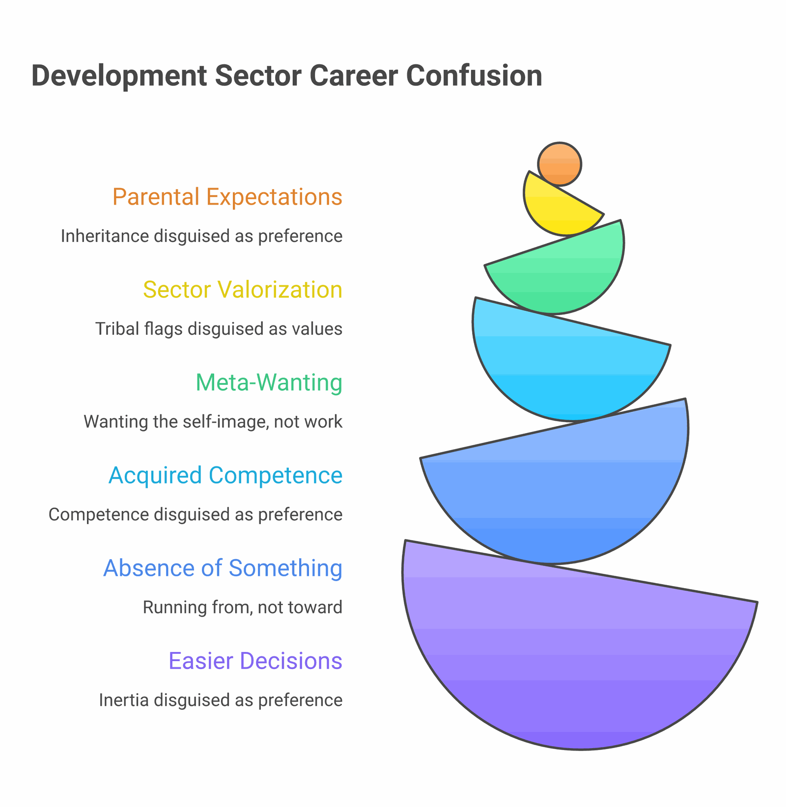
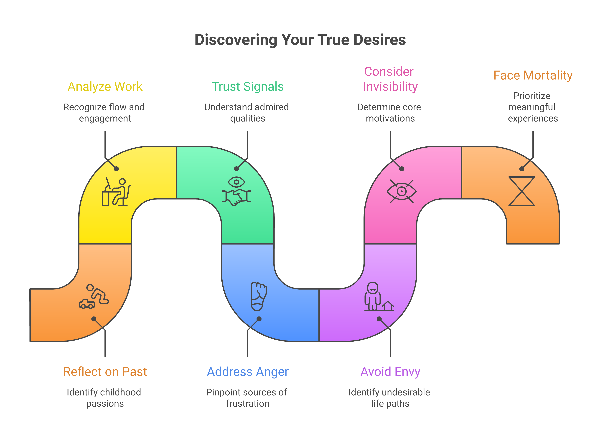

I once sat across from a programme director who had just been offered a million-dollar grant. She had spent four years building toward this moment. She was crying. Not from joy.
"I don't actually want to do this work," she said. "I think I never did. I just got good at applying for it."
She was 38. She had three degrees. She had won awards. Her LinkedIn was the kind that other people screenshot for inspiration. And she had only just discovered — at the moment of getting exactly what she had been working for — that she did not, in fact, want it.
This is a more common story in the development sector than we admit. It is the quiet, hardest, most-skipped step in our work: actually knowing what you want — before you build the theory of change for it, before you raise the budget for it, before you spend a decade of your life delivering on it.
Why It Is Hard
Most of the methodologies we teach in development assume you already know. Theory of change starts with "the impact you want to create." Logframes start with "the goal." Strategic plans start with "vision." Even reflective practice exercises usually start with "imagine your ideal future self."
The premise is that knowing what you want is the easy part — that the hard part is figuring out how to get it. For most people in development, this is exactly backwards.
The hard part is knowing. The "how" is technical; the "what" is psychological. And our sector, full of clever people trained to solve technical problems, has built an industry around the technical layer while leaving the foundational psychological one to chance.
"The whole problem with the world is that fools and fanatics are always so certain of themselves, and wiser people so full of doubts." — Bertrand Russell. The development sector's variant: the people who are surest what they want often want what someone else told them to want.
The Substitutes
Because actually knowing is hard, we substitute. Six common substitutes — each of which feels, from inside, exactly like preference:

1. Wanting what your parents wanted for you. An IAS officer's child wanting policy work. A doctor's child wanting public health. A migrant family's child wanting "respectability." Often invisible — it feels like preference, not inheritance. The test: imagine your parents had no opinions. Would you still pick this?
2. Wanting what your sector valorises. "I want to do MEL because rigour matters." "I want to do policy because scale matters." "I want to do grassroots work because authenticity matters." Each is a real value. Each is also a tribal flag. The test: if you couldn't tell anyone what you do, would you still do it the same way?
3. Wanting to be the person who wants this. The wanting is meta — not of the work, but of the self-image. You want to be someone who does rural fieldwork; the doing of it is endured. Distinguishable from real wanting by a single tell: how you spend your free time. If you don't read about it, talk about it, or do it when no one's watching, you don't want the work — you want the identity.
4. Wanting whatever you're currently good at. The economist's hammer problem. You spent five years getting fluent in Stata; everything starts looking like a regression-able question. Real preferences and acquired competence are easy to confuse. The test: if you had to start over tomorrow, would you build the same skills again?
5. Wanting the absence of something. "I want to leave consulting." "I want to leave my parents' city." "I want to leave the corporate sector." These are real wants. They are not, by themselves, sufficient guides. What you are running from tells you nothing reliable about what you are running to. Half the development sector is full of people who fled adjacent sectors and then assumed their new pasture was the right one because the fence behind them was uncomfortable.
6. Wanting what makes the immediate decision easier. A job offer. A funded project. A grant deadline. The path forward that the universe seems to have made available. Inertia disguised as preference. The test: if every option were equally easy to access, would you still pick this one?
The Honest Questions
Here are the questions that have surfaced the truth, repeatedly, in my own coaching of development practitioners across the past decade. None of them are quick. All of them are uncomfortable. That is the point.

Exercise · 90 minutes, alone, no phone
Seven questions to surface what you actually want
- What did you spend the most time on, voluntarily, between the ages of 8 and 14? Not what you were good at. Not what got praised. What you actually chose, when no one was watching. The clues to lifelong preference are usually still visible there.
- When was the last time you lost track of time at work? What were you doing? Who were you with? What was the texture of it? Flow is one of the most reliable signals we have of fit — and one of the easiest to miss because it feels like nothing in the moment.
- What kind of person do you trust most? Not admire — trust. Who would you call at 3am? What do they have in common? Often what you trust in others is what you most want to be — and what you most want to be doing is what surrounds you with that.
- What problem makes you angriest? Not "what should make me angriest" — what actually does. The thing that, when you read about it, makes you put the newspaper down. Anger, used carefully, is more reliable than enthusiasm. Enthusiasm fades; what makes you angry tends to stay.
- Whose life do you not envy? The reverse question. Pick the highest-status person in your sector. The one everyone wants to be. Now: imagine living their actual day, every day, for the next 20 years. The discomfort here is data.
- What would you do if no one would ever know? If your work would be invisible — no LinkedIn, no awards, no public recognition. What survives that filter? What you'd still do anonymously is closer to what you actually want than what you'd do for status.
- If you knew you'd die in five years, with full health till then, would you change anything? A blunt question; sometimes blunt questions are the only ones that cut through. The things that would change are the things that have been waiting for you to attend to them.
What the SEL Tradition Actually Teaches Us About This
There is a reason we are running this reflection on a platform that has a flagship course in Social-Emotional Learning. The competency that under-girds all of the questions above — self-awareness — is, in CASEL's framework, the first of the five SEL competencies and the foundation of the rest.
It is also the one we systematically under-build in adult education. We teach self-management (time management, productivity, work-life balance) endlessly. We teach social awareness through cultural-competence trainings. We teach relationship skills through facilitation courses. We teach responsible decision-making through ethics. We rarely teach self-awareness directly.
Most adults in the development sector have a sophisticated language for what they think about the work and a much thinner language for what they actually feel about it. We have rich vocabulary for the problems the world has and almost no vocabulary for the problems we have. The result is the programme director crying over the million-dollar grant.
If you build it for them, build it for yourself
If you are designing SEL programmes for children — or for teachers, or for community members — the question of what you actually want is not a tangent. It is the same skill. A practitioner who has never asked the questions in the exercise above will struggle to design a programme that helps an 11-year-old ask them. The depth at which you can hold this question for yourself is approximately the depth at which you can help anyone else hold it.
What I Have Found Repeats
Across the conversations I've had — and these are scattered across years, sectors, and life-stages — a few patterns repeat.
The people who knew earliest were rarely the most precocious. They were the ones who had been allowed, somewhere along the line, to want something embarrassing. A 16-year-old who wants to teach children Sanskrit. A 22-year-old who wants to make a film about her aunt's village. A 30-year-old who wants to leave the foundation to run a community kitchen. The cost of staying close to embarrassing wants is high; the cost of distancing from them tends to compound.
The people who knew latest had not been lazy or indecisive. They had been efficient. They had been competent. They had taken the next obvious step at each branch, until forty years of next-obvious-steps had walked them to the edge of a forest they no longer recognised. Efficiency is the enemy of knowing — because efficiency means moving fast in a direction, and the question of which direction is the one that requires slowness.
The clearest answers came from the body, not the mind. "I keep getting sick before this project starts." "I cannot sleep the night before this call." "I notice I am most alive when I am in the field." The intellect can rationalise anything. The body has fewer defences. Pay attention to the body's signals before the mind's arguments.
It almost always changes. The thing you wanted at 22 is rarely the thing you want at 35; the thing you want at 35 is rarely the thing you want at 50. Knowing-what-you-want is not a one-time event but a practice — a check-in you owe yourself, at least once a year, when the year is quieter and the question is easier to hear. The people who do this badly are not the people who change their answer; they are the people who never check.
A Practical Suggestion
If this essay has done anything for you, do not turn it into reading. Reading is the substitute for the work. The work is the seven questions, alone, with a notebook, with no phone, for 90 minutes.
If you cannot find 90 minutes, you do not have a clarity problem — you have a permission problem. The 90 minutes are there; you have not yet given yourself permission to use them on this. That is the more important thing to notice. Whatever you would have to clear from your calendar to make this time available — clear it. The work you are doing in those slots is, statistically, less consequential than the work the answers will redirect.
Do the exercise. Write the answers down by hand. Date the page. Put it in an envelope marked with today's date. Open it in a year.
The point is not that the answers will be right. The answers may be wrong. The point is that you have done the practice — and that you will do it again, more clearly, in a year. The compounding effect of this practice, done annually from the age of 25 onwards, is the closest thing we have to the actual skill of knowing.
The programme director with the million-dollar grant is, by the way, doing fine. She left. She lost the grant; the foundation re-routed it to a colleague. She runs a small writing programme now, in Goa. It is much less prestigious. She told me, the last time we spoke, that she had not cried since.
Knowing what you want is the foundation. Everything else — the theory of change, the budget, the implementation, the impact — comes after. We have over-built the layers above and under-built the one beneath. That is a fixable error.
Start now.